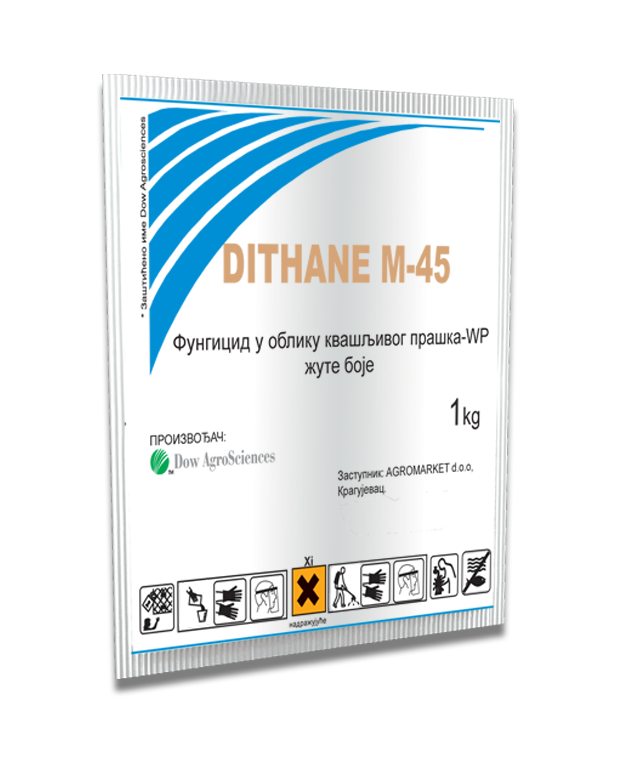
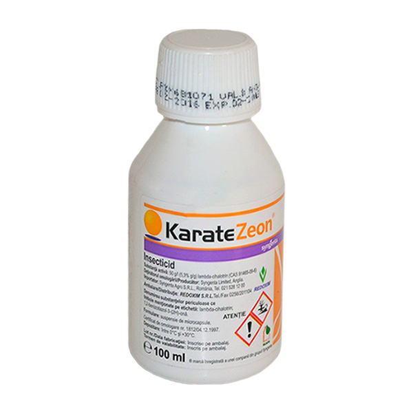
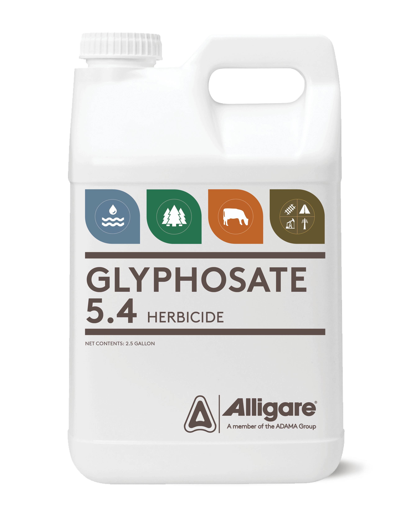

1. Fungicidi (protiv gljivičnih oboljenja)
Koriste se za suzbijanje bolesti poput pepelnice, plamenjače, monilioze i krastavosti lista.
🔹 Za voćnjake: Mankozeb, Kaptan, Tiram, Dithane, Score
🔹 Za vinograde: Ridomil Gold, Quadris, Luna Experience, Cabrio Top
🔹 Za povrće: Bravo, Antracol, Previcur Energy
2. Insekticidi (protiv insekata i štetočina)
Koriste se za suzbijanje lisnih vaši, grinja, moljaca i drugih štetočina.
🔹 Za voćnjake: Karate Zeon, Confidor, Mospilan, Decis
🔹 Za vinograde: Actara, Coragen, Calypso
🔹 Za povrće: Fastac, Vertimec, NeemAzal
3. Herbicidi (protiv korova)
Koriste se za uklanjanje korova koji smanjuju prinos i ometaju rast biljaka.
🔹 Za voćnjake i vinograde: Glyphosate, Basta, Stomp Aqua
🔹 Za povrće: Dual Gold, Sencor, Lontrel
4. Biostimulatori i folijarna ishrana
Podstiču rast, otpornost i prinos biljaka.
🔹 Amino kiseline: Megafol, Drin
🔹 Mikroelementi: Wuxal, Fitofert
🔹 Alge i huminske kiseline: Algaren, Humistar